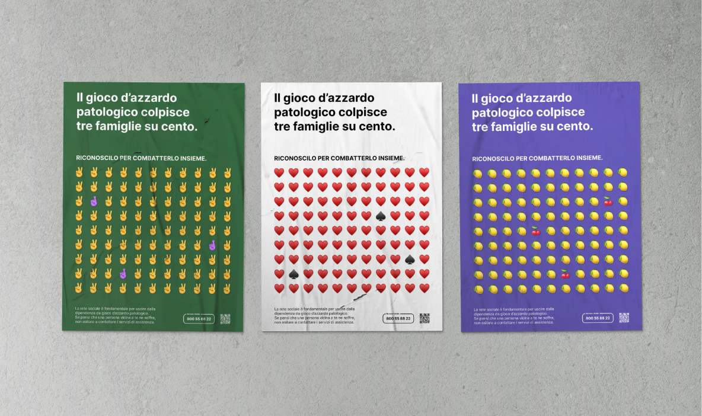
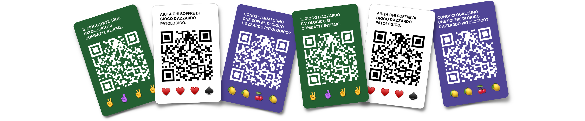
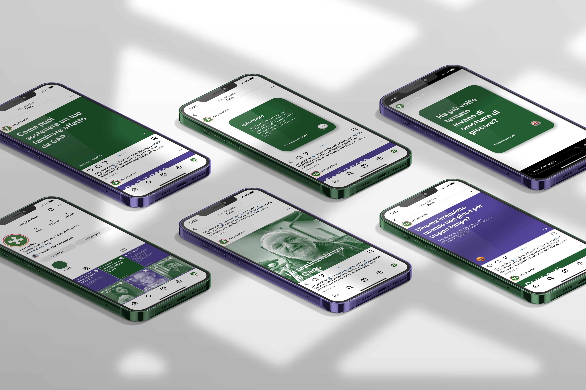

Giacomo
Bozzato
Bozzato


Hi! 👋 I'm a UI designer and photographer from Italy, now based in Sydney, focused on visual storytelling for food, the environment, and purpose-driven creative projects.
Mind the gap
social design
2022
Mind the gap is an awareness campaign that addresses the relatives of people who suffer from pathological gambling. The project consists of a series of posters, both static and dynamic, a social media strategy and a collection of stickers. It was developed in team in one week during a trainee workshop with the company ats Insubria.


